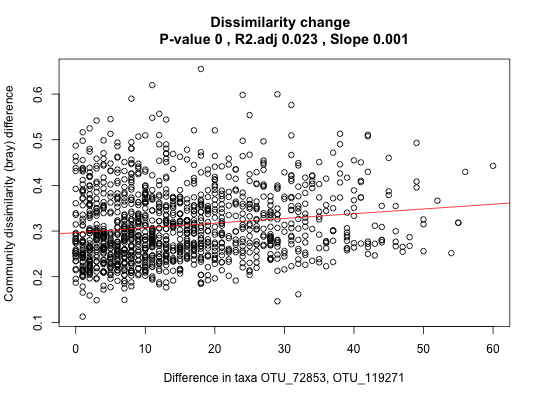
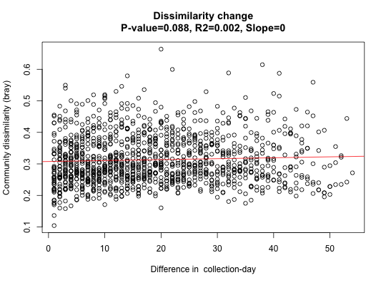

All pair-wise community dissimilarities are plotted against the corresponding abundance difference of selected taxa or metadata.
simDecay(x, taxa = c(), metadata = c(), metadataName = "", samplegroups = rep(1, ncol(x)), dissim = "bray", normtaxa = FALSE, logdissim = FALSE, intragroupsOnly = FALSE, header = "", groupName = "", inversePlot = FALSE)
| x | taxon-sample matrix with taxa as rows and samples as columns |
|---|---|
| taxa | vector of taxon row indices or row names present in x |
| metadata | vector with values in the same order as samples in the taxon matrix |
| metadataName | name of the metadata vector (e.g. age) |
| samplegroups | supposed to assign an integer to each sample, with integers ranging from 1 to group number. If provided, intra-group dissimilarity dots are colored by sample group |
| dissim | dissimilarity measure to use, a measure supported by vegan's vegdist function |
| normtaxa | divide each taxon vector in x by its sum |
| logdissim | take the logarithm of the dissimilarity before fitting a line |
| intragroupsOnly | only take sample pairs within the same group into account for dissimilarity computation (groups are labeled in the plot by their identifier) |
| header | a string to be appended to the plot title (Dissimilarity change) |
| groupName | the name for the groups displayed in the legend (defaults to group) |
| inversePlot | plot community dissimilarity on the x-axis instead of on the y-axis |
#> [1] "Number of columns 329" #> [1] "Keeping 311 columns with column sums equal or above 10000"data=rar[[1]] # Faecalibacterium OTUs taxa=c("OTU_72853","OTU_119271") out1=simDecay(data[,1:N],taxa)data("david_stoolA_metadata") days=david_stoolA_metadata[1,rar[[2]]] # only keep samples that made it through rarefaction out2=simDecay(data[,1:N],metadata=days[1:N],metadataName=rownames(david_stoolA_metadata)[1])